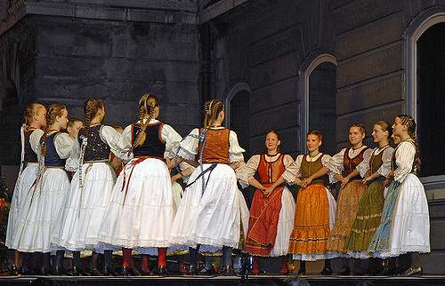
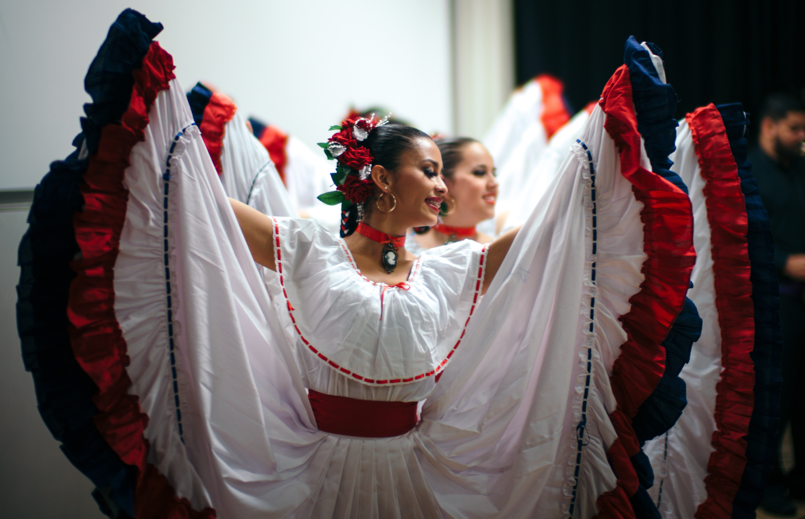
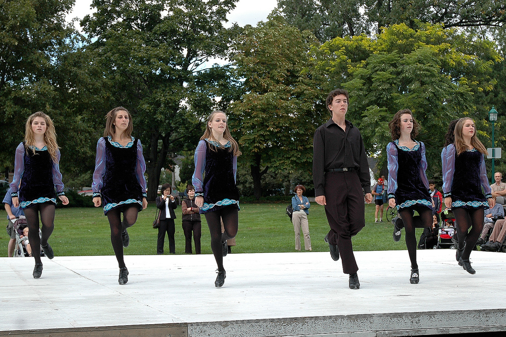
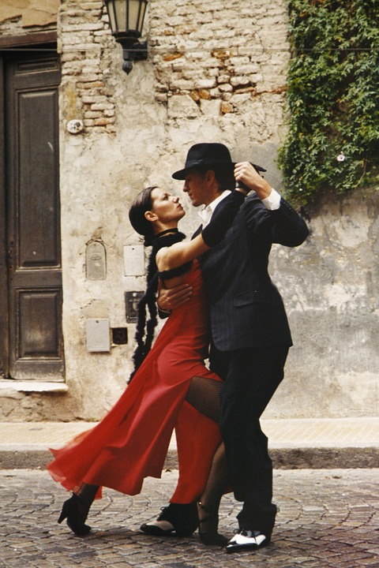

Les Cours Offerts à Nos Débuts en 2010
Danse Folklorique Internationale (sanses du monde)
  Un tour du monde en musique et en danse afin de découvrir les différentes richesses culturelles. Danses traditionnelles québécoises, mais aussi, internationales. Initiation à la danse traditionnelle bulgare, écossaise, française, polonaises, roumaines, ukrainienne, etc.
Matériel spécial: souliers de ballet noir
Gigue (québécoise et irlandaise)
 Danse avec des souliers possédant une plaque de métal (ou d'une autre matière qui fait du bruit) au bout du pied et au talon. Cette danse implique principalement les pieds et les jambes afin d'émettre des sons avec les souliers.
Matériel spécial: souliers de gigue
Danses en Ligne
 Danses de groupe où les danseurs sont placés en ligne (une ou quelques unes). Cela touche à différents styles de danse et de musique, tels que: la danse sociale, le country, la danse et la musique latine, le rock...
Danses de groupe où les danseurs sont placés en ligne (une ou quelques unes). Cela touche à différents styles de danse et de musique, tels que: la danse sociale, le country, la danse et la musique latine, le rock...
Danses Sociales (axées latines)
 Initiation à la Salsa, au Merengue, à la Bachata, au Cha-Cha-Cha, etc. sur différents rythmes latins.
Salsa: Les partenaires doivent être très proches et ils doivent se tenir en ayant les avant-bras placés à l'horizontale. La principale difficulté est de suivre les temps qui ne sont pas toujours évidents.
Merengue: Danse simple à tempos variés avec des balancements de hanches.
Bachata: Danse aux rythmes lents sur une musique plus romantique.
Cha-cha-cha: Danse pour laquelle les partenaires ne sont pas trop proches et où les mouvements de base sont simples et faciles à modifier.
Mambo: Version jazzée de la rumba cubaine et étant aussi à l'origine du cha-cha-cha et où les danseurs sont le miroir de l'un de l'autre.
Samba: Danse comportant des mouvements pendulaires au rythme rapide et difficile avec beaucoup de croisés de pieds.